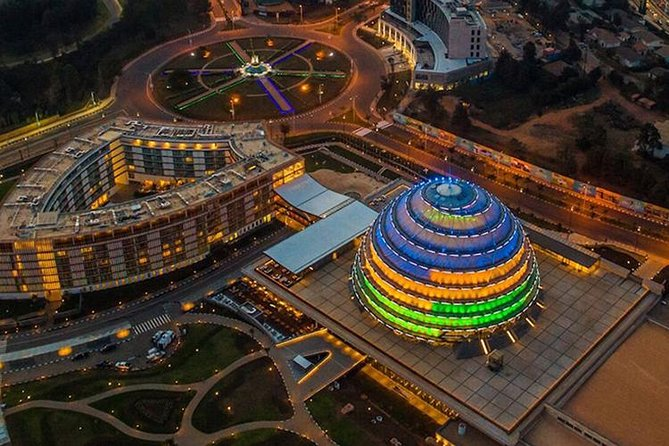
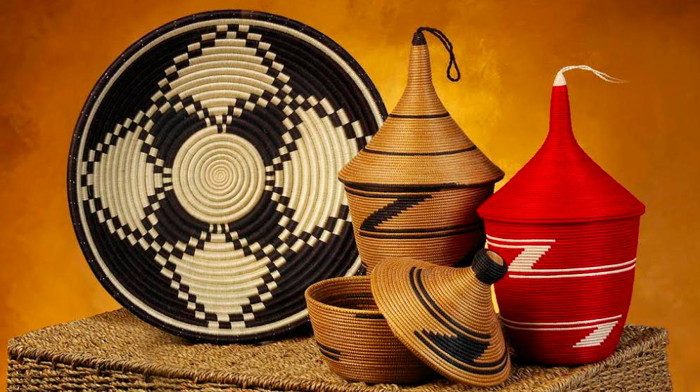

Capital City
The Capital city of Rwanda is know as kigali, it is the largest city, situated near the nation's geographic centre in a region of rolling hills, with a series of valleys and ridges joined by steep slopes.

President
Paul Kagame is the President of Rwanda, having held office since 2000. Before becoming president, he was a military leader and played a key role in ending the 1994 Rwandan genocide as the commander of the Rwandan Patriotic Front (RPF). Kagame, loved by his nation, has been influential in Rwanda’s economic development, reconciliation efforts, and technological advancements.

languages of Rwanda
The main language of Rwanda is Kinyarwanda, then followed by English and a bit of french spoken by a low minority of people.